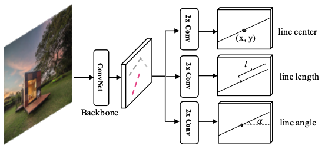
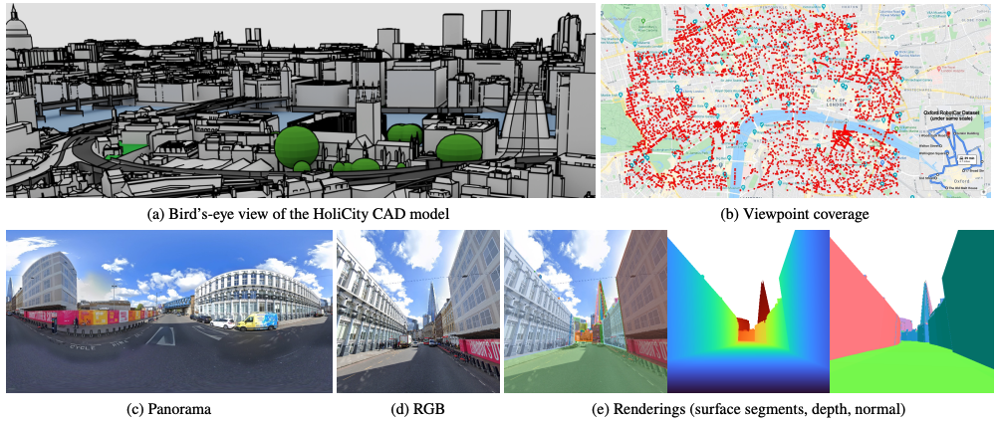
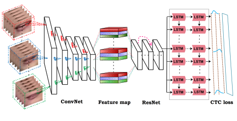

|
daixili_cs AT 163.com; daixili_cs AT berkeley.edu I am a Ph.D. student in UESTC. Now, I am a visiting Ph.D. student in the EECS department at UC Berkeley advised by Yi Ma. I am interested in rate reduction, 3D vision, and artificial intelligence. My recent research focuses on integrating rate reduction and deep learning approaches into a unified framework. |
{kind=link}
|
|

|
Peter(Shengbang) Tong, Xili Dai, Ziyang Wu, Mingyang Li, Brent Yi, Yi Ma Currently under review for a conference |

|
Xili Dai*, Peter(Shengbang) Tong*, Mingyang Li*, Ziyang Wu*, Kwan Ho Ryan Chan, Pengyuan Zhai, Yaodong Yu, Michael Psenka, Xiaojun Yuan, Heung Yeung Shum, Yi Ma Submitted to Entropy Journal |

|
Cheng Yang, Jia Zheng, Xili Dai, Rui Tang, Yi Ma, Xiaojun Yuan WACV 2022 |
|  |
Xili Dai, Shuai Wu, Xiaojun, Yuan, Haigang Gong, Yi Ma Submitted to NeuroComputing |
|  |
Yichao Zhou, Jingwei Huang, Xili Dai, Linjie Luo, Zhili Chen, Yi Ma [code] [paper] [Project Page] |
|  |
Xiaobing Zhang, Haigang Gong, Xili Dai, Fan Yang, Nianbo Liu, Ming Liu AAAI 2019 [paper] |

|
Chunmei Ma, Xili Dai, Jinqi Zhu, Nianbo Liu, Huazhi Sun, Ming Liu Mobile Information System 2017 [paper] |